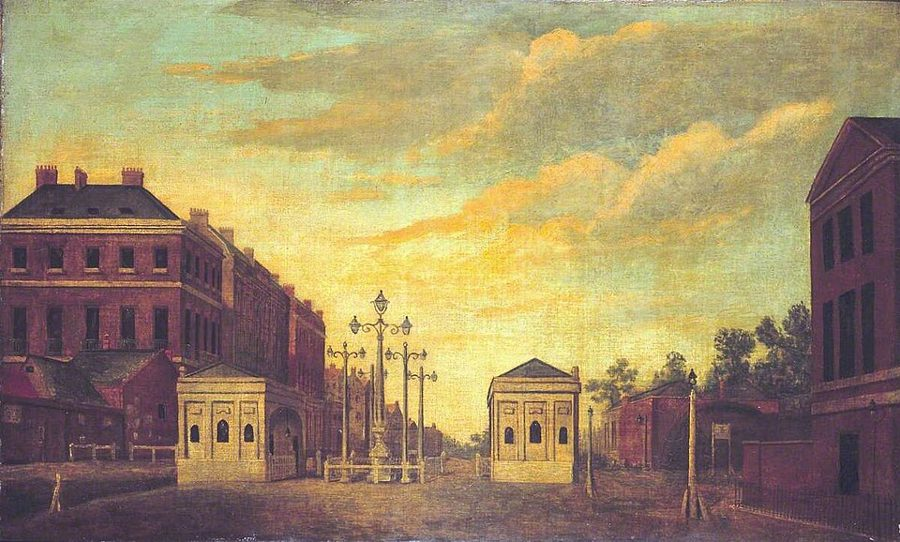

这一页在做什么
这是全书最长的几章之一，题目是地租，讲的却不只是地主收多少钱。斯密要回答：一块地凭什么收租，收多少由什么定；人吃饱以后，拿余粮去换什么；社会一天天富起来，地主、工人、雇主三种人里谁跟着沾光。中间他插进一段占全章六成多的四百年银价考证，大可跳过。读的时候抓两条线：地租从哪来，和章末那段对商人的警告。

他想证明什么
这一章绕了很远，想证明的是一件事：社会每往前走一步，地主的真实收入往往跟着涨。斯密先说地租是什么：农场主付完工钱、种子、牲口，再留下本地种地的普通利润，剩下的地主尽量收走。人要吃饭，几乎哪块地种出的粮都比种地的人吃得多，所以产粮的地总有地租。粮有了余，吃饱的人就拿它去换衣服、房子、家具和金银，这些东西的地租也就跟着来了。接着他要对付一个疑问：牛肉、木料越来越贵，是它们真变贵了（这正是地租上涨的来路），还是白银一直在贬值？为了回答它，他插进一段占全章六成多的白银题外话。
读法：§9 本章结论先读，杨译两千来字，三大阶层和「商人的提案要带着怀疑听」都在这里。§1–3 有空就读，修路、马铃薯、胃口有限那几段好看。§4–7 的银价考证可以整段跳过，它的结论本页替你说了。
第 261 段说地主的利益和社会的利益「严格地、不可分割地」连在一起，说得很笃定。四十年后，李嘉图和英国的谷物法之争把这句话反了过来，见「今天怎么看」。
斯密落在哪：社会的每一步改良，都有直接或间接抬高地租的趋势；地主和工人的利益跟社会绑在一起，靠利润为生的商人和制造业者却不然，他们提出的商业法规，要带着最大的怀疑去审查。
分节地图
这一页是卷一第 11 章，本站切成 9 节。粗体是本站起的节名；「杨译里找」后面是杨译里这一节开头附近的小标题或第一句；灰色的英文是原文这一节开头的几个词。标「先读」的是最短读法。
- 地租是垄断价格；修路最划算地租是超过支付农场主普通利润以后的那部分产物RENT, considered as the price paid …地租是什么，为什么近城的地租高。第 3 段海边礁石上的海藻也要交租；第 14 段伦敦近郊请愿反对修路，最好看。
- 葡萄园、糖岛和马铃薯谷地或牧场的地租和利润调节所有其他土地的地租和利润In all great countries the greater …种粮的地租管着别的地。法国老葡萄园主求禁种新葡萄，弗吉尼亚按奴隶人头限种烟草；第 48–51 段算马铃薯能养活多少人。
- 胃口有限，排场无边第二部分 论有时能、有时不能提供地租的土地产品HUMAN food seems to be the only …衣料、建材、煤和金属什么时候才有地租。第 58 段胃口有限、排场无边，第 87 段古巴人拿金子当小石子，都在原典。
- 四百年银价（上）：古代麦价第三部分 论总能提供地租的产品和有时能、有时不能提供地租的产品两者价值比例的变化THE increasing abundance of food, in …1350–1570 年的麦价考证，逐条挑前人的错。可跳过；只记第 120–122 段：劳动才是衡量白银价值的真实尺度，谷物是它最好的替身。
- 美洲白银一路流到中国第二时期BUT how various soever may have …美洲银矿让银价大跌，然后是谷物奖金、加的斯的进口量。细账可跳过；第 165–166 段白银流到中国和印度，值得挑出来看。
- 金银比价，越来越贵的鸡和猪黄金价值和白银价值比例的变化BEFORE the discovery of the mines …金银比价、西班牙的银税，再讲牛、鸡、猪为什么随改良变贵：是它们真贵了，不是银子贱了。结论 §7 末尾会再说一遍，可跳过。
- 羊毛、鱼和白银题外话的结论第三类The third and last sort of …羊毛、皮革、鱼、金属，前半可跳过。第 228 段例外：金银值钱不说明国家穷，手握银矿的西班牙、葡萄牙反倒穷。
- 表越来越便宜改良推进对制造品真实价格的影响IT is the natural effect of …改良让制造品越来越便宜：上世纪 20 镑的表，如今「也许」20 先令。还有两条限奢法令和伊丽莎白女王的第一双编织长袜。
- 三大阶层，商人的利益与公众相反本章结论I SHALL conclude this very long chapter …全章收尾：每一步改良都有抬高地租的趋势；三大阶层里，地主和工人的利益跟社会一致，商人和制造业者不然。第 263 段是全书名段。
先用中文过一遍：这一页的概念
这一页用到的两个概念。讲的是概念本身；每块的「今天」说今天怎么看它。
§1级差地租 rent varies with fertility and situation
同一个市场里，一夸特小麦卖同一个价，不管它长在哪块地上。离城近的地省运费，肥地同样的工夫收得多，卖价扣掉工钱、利润和运费，剩得就多，地主收的租也多；最远、最薄的那块地刚好够本，交不出租。好地比这块「边际」上的地多出来的那一截，就叫级差地租。照这个道理，是粮价高、地又好，地租才高，不是反过来：斯密第 8 段说，工资和利润推高价格，地租却是被价格推高的。斯密没用「级差地租」这个词。
今天：李嘉图 1817 年把它讲成体系：粮价由最差那块耕地的成本定，好地省下的就是地租。今天推广成「经济租」：供给固定的东西，收入里超出它留在原用途所需的那一截，黄金地段的铺租就是。
在这一页：第 8、13 段；第 84 段说矿的地租看「相对肥力」，第 86 段却说地面上的地看绝对肥力。另见页 04 的垄断价格。
§9三大阶层 the three great, original and constituent orders
斯密把一国一年的全部产出（或者说它的总价钱）分成三份：地租、工资、利润，对应三种人：靠地租过日子的地主，靠工资过日子的工人，靠利润过日子的雇主。别的人，比如官员、军人、仆人、放债收息的人，收入归根到底都从这三份里分出来。这里的 order 是按收入的来路分的「等级」，不带阶级斗争的意思，译本：「三个阶级」。斯密拿这个框架做一件事：挨个问三种人的利益，和整个社会的利益是不是一致。
今天：今天叫「功能性收入分配」：统计劳动收入、资本收入各占国民收入几成。不同的是，今天一个人常常既拿工资又收房租、拿股息，三种人的界线没这么分明。
在这一页：第 260 段立框架，第 261–263 段逐个问。三份收入的来历见页 03 的价格的三个组成部分。
故事和背景
这一页里的故事和 18 世纪的东西，按在书里出现的顺序排。
§1反对修路的伦敦近郊
第 14 段，斯密说好路、运河、能通航的河是「所有改良里最大的」：运费一降，远乡就和城郊站到了差不多的起跑线上。城郊的人不乐意。据斯密说，不过五十年前，伦敦附近几个郡向议会请愿，反对把收费公路修进更远的郡，理由是那边工钱便宜，草料和谷物运来伦敦会卖得比他们便宜，他们的地租要跌，耕作要垮。结局斯密只写了一句：他们的地租后来涨了，耕作也改进了。道理在同一段：路打破了城郊的垄断，也给城郊的产物打开了许多新市场。在杨译里找「良好道路等减少地租的差异」那个小标题。
§2自己给自己限产的人
有些作物的地租比种粮高得多，种的人就怕别人也来种。第 36 段：1731 年，法国老葡萄园的园主求来一道御前会议的命令，没有国王特许，不准新种葡萄，借口是粮食不够、酒太多。斯密反问：酒真多了，利润自己会掉下来，哪用得着命令？第 42 段：在弗吉尼亚和马里兰，种烟草的园主也怕烟草太多，由殖民地议会立法，每个 16 到 60 岁的黑人只许种六千株；据道格拉斯博士的书，丰年还按人头烧掉一些，斯密加了一句：我怀疑他的消息不准。这些按人头算的「黑人」是种植园里的奴隶，斯密在这里照算不评；卷三第 2 章他说，他相信奴隶的劳动到头来最贵，又说糖和烟草的利润付得起用奴隶，见页 14。
§5白银把旧大陆的两头连起来
第 165–166 段是题外话里最有远见的一笔。斯密说，美洲的银子不只流进欧洲，还从欧洲转手，也从墨西哥的阿卡普尔科坐船经马尼拉，一路流到中国和印度：那里粮多人多，金银比在欧洲值钱，中国十到十二两银子换一两金子，欧洲要十四五两。所以欧洲船去东方，最值钱的货常常就是银子。他说，新大陆的白银似乎是旧大陆两头做买卖的主要商品之一。两百多年后，历史学家 Flynn 和 Giráldez 1995 年提出，1571 年西班牙人建马尼拉、白银开始横渡太平洋，就是世界贸易诞生的那一年。斯密还说中国比欧洲哪里都富（第 228 段）。今天这仍在争：Pomeranz 2000 年认为江南到 1750 年前后还和英格兰差不多，Broadberry 等 2018 年估计 1750 年中国人均收入已明显落后。
§8二十镑的表，女王的长袜，斯密弄错的磨坊
第 242 段：上世纪中叶要 20 镑的好表芯，如今「也许」20 先令就买得到；伯明翰、设菲尔德的小五金也大跌，欧洲别处的工匠常常承认，出两三倍的价也做不出一样好的。第 249 段说英格兰头一个穿编织长袜的，据说是伊丽莎白女王，西班牙大使送的；Cannan 的注引了另一种说法：是她的丝绸女官 Mountague 夫人送了一双黑色的编织丝袜。第 250 段斯密说，16 世纪初的英格兰还不知道风磨和水磨，这是他弄错了：1086 年的《末日审判书》已经记下约五千六百座水磨，捶打呢绒的水力漂洗磨，12 世纪下半叶也已进了英格兰。
原典：斯密的原话
这本书是公版书，下面整段放斯密的原文，配本站的白话译。灰字说它在杨译的哪里，最后一行是这段里今天容易读错的 18 世纪词。
§3胃口有限，排场无边
全书最好的人性观察之一，后面讲金银宝石为什么值钱，都从这里出发。在杨译因此对衣服和住宅原料的需求因获得食物更为容易而增加那个小标题下面。
The rich man consumes no more food than his poor neighbour. In quality it may be very different, and to select and prepare it may require more labour and art; but in quantity it is very nearly the same. But compare the spacious palace and great wardrobe of the one, with the hovel and the few rags of the other, and you will be sensible that the difference between their cloathing, lodging, and houshold furniture, is almost as great in quantity as it is in quality. The desire of food is limited in every man by the narrow capacity of the human stomach; but the desire of the conveniencies and ornaments of building, dress, equipage, and houshold furniture, seems to have no limit or certain boundary. Those, therefore, who have the command of more food than they themselves can consume, are always willing to exchange the surplus, or, what is the same thing, the price of it, for gratifications of this other kind. What is over and above satisfying the limited desire, is given for the amusement of those desires which cannot be satisfied, but seem to be altogether endless.
本站译：富人吃下去的东西，不比他隔壁的穷人多。吃得精不精可能天差地别，挑选和烹调也许要多花工夫和手艺，可分量几乎一样。可是，拿一个人宽敞的宅子、满满的衣橱，去比另一个人的破屋和几片破布，你就会觉出来：两人在穿的、住的、家里摆的东西上，数量的差别几乎和质量的差别一样大。每个人想吃的，都被人胃那点小小的容量管住了；可是对房屋、衣着、车马排场和家具上那些舒适和装饰的欲望，好像没有界限，也找不到一条确定的边。所以，谁手里的粮食多过自己吃得完，总是愿意把多出来的那部分，或者说它的价钱，拿去换另一类的享受。满足了有限的欲望还剩下的，就拿去供那些填不满、好像永远没有尽头的欲望消遣。
斯密说的是数量：富人的胃不比穷人大，多出来的钱就流向房子、衣服和排场。下一句他接着说，穷人为了换口饭，争着拿更便宜、更精的手艺去满足富人的种种奇想。一章讲地租，他顺手讲清了奢侈品的需求从哪来。
- equipage车马排场：自家的马车、马匹和随从，译本：「成套用品」，容易读成成套的器具
- conveniencies便利品：让日子舒服的东西，和必需品相对
- gratifications享受、满足，不是「感激」
§3古巴人的金子
粮食的剩余怎样给金银宝石带来价值，斯密用一个场面讲完。在杨译食物的丰富提高其他产品的价值那个小标题下面，那一段的后半。
Food not only constitutes the principal part of the riches of the world, but it is the abundance of food which gives the principal part of their value to many other sorts of riches. The poor inhabitants of Cuba and St. Domingo, when they were first discovered by the Spaniards, used to wear little bits of gold as ornaments in their hair and other parts of their dress. They seemed to value them as we would do any little pebbles of somewhat more than ordinary beauty, and to consider them as just worth the picking up, but not worth the refusing to any body who asked them. They gave them to their new guests at the first request, without seeming to think that they had made them any very valuable present. They were astonished to observe the rage of the Spaniards to obtain them; and had no notion that there could anywhere be a country in which many people had the disposal of so great a superfluity of food, so scanty always among themselves, that for a very small quantity of those glittering baubles they would willingly give as much as might maintain a whole family for many years. Could they have been made to understand this, the passion of the Spaniards would not have surprised them.
本站译：粮食不但是世上财富的大头，许多别的财富之所以值钱，大半也靠粮食充足。古巴和圣多明各的穷苦居民，刚被西班牙人发现的时候，常把小块的金子戴在头发上和衣服的别处做装饰。他们看待这些金子，似乎就像我们看待比一般好看些的小石子：值得弯腰捡起来，可有人开口要，也犯不上不给。新来的客人一开口，他们就送了，好像并不觉得送出了什么贵重的礼物。看到西班牙人想要金子的那股疯劲，他们吃了一惊。他们想不到，世上竟有这样一个国家：那里许多人手上的粮食多得吃不完，而粮食在他们自己那里总是那么少；为了一丁点亮闪闪的小玩意儿，那些人肯拿出够一家子吃好多年的粮食。要是能让他们明白这一点，西班牙人的狂热就不会让他们吃惊了。
斯密拿这一幕讲经济道理：金子值钱，是因为有人吃饱了还有余粮。他没写后来的事：研究者估计，西班牙人到来后约三十年里，伊斯帕尼奥拉岛（圣多明各所在的岛）上的原住民死了八到九成，死于疫病、苦役、饥饿和杀戮。
- baubles亮闪闪的小玩意儿、不值钱的饰物
- superfluity多余、剩余的部分，不是贬义的「多余」
- have the disposal of手上有、可以随意处置
§9商人的提案要带着怀疑听
全书最常被引用、也最常被断章取义的段落之一，本章最后一段的后半。在杨译但靠利润为生的人的利益同社会一般利益没有相同的联系那个小标题下面。
The interest of the dealers, however, in any particular branch of trade or manufactures, is always in some respects different from, and even opposite to, that of the public. To widen the market and to narrow the competition, is always the interest of the dealers. To widen the market may frequently be agreeable enough to the interest of the public; but to narrow the competition must always be against it, and can serve only to enable the dealers, by raising their profits above what they naturally would be, to levy, for their own benefit, an absurd tax upon the rest of their fellow-citizens. The proposal of any new law or regulation of commerce which comes from this order, ought always to be listened to with great precaution, and ought never to be adopted till after having been long and carefully examined, not only with the most scrupulous, but with the most suspicious attention. It comes from an order of men, whose interest is never exactly the same with that of the public, who have generally an interest to deceive and even to oppress the public, and who accordingly have, upon many occasions, both deceived and oppressed it.
本站译：不过，不管哪一行买卖或制造业，经营者的利益总在某些方面和公众不同，甚至相反。把市场做大、把竞争压小，永远是经营者的利益所在。把市场做大，往往和公众的利益相当合得来；把竞争压小，却一定和公众作对，它唯一的用处，是让经营者把利润抬到本来的水平以上，为自己的好处，向其余的同胞收一笔荒唐的税。凡是这个阶层提出来的新法律、新商业法规，听的时候都要十分小心；没有经过长时间的仔细审查，不但要一丝不苟，还要带着最大的怀疑，就绝不该采纳。因为提议的这群人，利益从来不和公众完全一致；欺骗乃至压迫公众，通常对他们有利；事实上，他们也在许多场合既骗过公众，也压过公众。
斯密没说做生意是坏事：把市场做大他赞成，要提防的是「把竞争压小」的提案。前几句他说，商人比乡绅更懂自己的利益，乡绅被说动，是出于「一个很单纯却真诚的信念」：商人的利益就是公众的利益。页 16 的「行家说给外行听」，说的是同一幅画面。
- dealers某一行的经营者，商人和工场主都算，不只是「贩子」
- an interest to deceive欺骗对他们有利，说的是利益所在，不是「他们想要欺骗」
- regulation of commerce商业法规：管贸易和各行各业的法令
译本勘误
杨译这一章整体可靠。下面只收会把人读歪的两处，都在全书名段第 263 段。灰字是英文原文那一处的几个词；方框里是杨译的原句，在电子书里搜它。
§9欺骗公众对他们有利，不是他们「想要」术语
have generally an interest to deceive
译本：「他们常常想要欺骗公众甚至想要压迫公众」
原文的 interest 是「利益所在」：斯密说这个阶层的处境，让欺骗乃至压迫公众通常对他们有利，所以他们的提案要防着。译成「想要」，名句就从说利益结构变成了说人品和动机，读起来像在骂人。
§9判断在本行上更靠得住，不是被私利左右误译
much more to be depended upon
译本：「更多地取决于关于自身利益的考虑」
to be depended upon 是「靠得住」。原文说：商人的判断，用在本行的利益上，比用在社会的利益上可靠得多。斯密说的是他们懂什么、不懂什么；译本读成判断被私利左右，意思偏到了动机上。
今天怎么看
这一章的主要说法和今天的判断。每条标签判的是那条论点，五种标签的意思：
- 成立今天的经济学和证据支持这句话。
- 部分成立大方向对，细节或适用范围要改。
- 过时说的是 18 世纪的世界，当时也许对，今天的制度和技术已经变了。
- 被推翻后来的经济学或证据说明它错了。
- 有争议经济学界至今没有定论，两边各有代表性的研究。
地租的高低是价格的结果，不是原因
工资和利润非付不可，价格才高得起来；地租是卖价扣掉它们剩下的，价格高，地租才高。今天看，对一片地、一国的土地总体说，这成立，李嘉图由此发展出级差地租；可一块地有别的用处可选时，租金就成了这种用途的成本，会进价格，斯密第 18、32 段讲草地和谷地互相转换时，自己也这样用。他在第 5 段又说地租是「垄断价格」，两种说法并不协调。
§1 第 5–8 段金银多，不等于国家富
美洲银矿让欧洲金银多了、物价涨了，欧洲变富却另有原因：封建制度垮了，人们干活的成果有了起码的保障；手握银矿的西班牙、葡萄牙反倒是欧洲最穷的国家之一。今天看，这条成立：Drelichman 2005 年的研究发现，16 世纪中后期白银涌进卡斯蒂利亚，出现了今天叫「荷兰病」的症状，本地物价被抬高，能和外国竞争的行业吃亏。
§7 第 228 段地主的利益和社会的利益连在一起
社会每进一步，真实地租往往跟着涨，所以地主只要懂自己的利益，就不会把公众引错路；斯密只怪他们收入来得太容易，懒得想。今天看，这条被推翻了：李嘉图 1815 年就论证，粮食关税抬高粮价，地租涨了，代价是利润和工人；地主占多数的英国议会靠 1815 年的谷物法挡住便宜的进口粮三十多年，1846 年才废除。
§9 第 254–261 段商人和制造业者提出的商业法规，要带着最大的怀疑审查
他们懂自己那一行，利益在把市场做大、把竞争压小，后一样总和公众作对。今天看，这条成立：Olson 1965 年讲人少、利益集中的集团最容易组织起来争好处，Stigler 1971 年讲受管制的行业常能让管制替自己挡竞争，今天叫「管制俘获」。
§9 第 263 段书里的说法：马铃薯要是成了主食，同样的地能养活多得多的人
- 书里
- 第 48 段。斯密算账：一英亩马铃薯就算一半是水，干物质也是一英亩小麦的三倍；要是它成了大众的主食，同样的耕地能养活多得多的人，「人口会增加，地租会涨」。本卡只判人口这一半。第 51 段他提到的难处只有一条：马铃薯放不住。
- 当时
- 斯密说爱尔兰最底层的人一般靠它过活（第 50 段）。他的证据是伦敦那些据说吃马铃薯长大的爱尔兰苦力和妓女，是听来的，带着当时的阶级和性别成见。
- 今天
- Nunn 和 Qian 2011 年在《经济学季刊》上估计，1700–1900 年旧大陆人口和城市化的增长，约四分之一要归功于马铃薯。爱尔兰是最极端的例子：1841 年人口约 820 万；1845 年起晚疫病连年毁掉马铃薯，大饥荒里约一百万人死去，一百多万人出走，1851 年只剩约 660 万。单靠一种会得病的作物，代价斯密没有料到。核对于 2026-10。依据：Nunn & Qian, Quarterly Journal of Economics, 2011；北爱尔兰公共档案馆（PRONI）大饥荒教育资料。
这段话是在骂商人吗
主流看法：第 263 段今天两边都爱引：批评大企业的人说斯密早就警告过资本家，主张少管制的人说斯密不信任商人借政府之手牟利。经济学里，它被看作「寻租」和「管制俘获」理论的先声（Olson 1965；Stigler 1971），寻租见页 08。
斯密的看法：第 263 段：把市场做大常常和公众一致，把竞争压小总是相反；要审查的是这个阶层提出的「新法律或商业法规」。他承认商人比乡绅精明，又说乡绅被说动是出于真诚的信念。卷四整整一卷，拆的就是商人游说出来的那套重商主义法规（页 16–21）。
本站的评论：斯密提防的不是做生意，是做生意的人去找立法者。他的理由有两层。一层是结构上的：利润率不随社会繁荣而涨（第 263 段），靠利润吃饭的人和社会没有同进退的绑带。另一层更经得起时间：压小竞争的规矩，好处集中在少数人，代价摊给所有人，受害的人分散、不出声。他对地主的宽容倒说明，这个道理不分商人地主：谁能从限制竞争里得利，谁就会去游说，谷物法就是地主的版本。
本站的总体看法：这一章不必通读。§9 本章结论一定要读，两千来字，是读卷四的钥匙；§1–3 挑修路、马铃薯、胃口有限那几段。四百年银价的考证是斯密的「实验室笔记」，知道他由此得出「金银多不等于富」就够了。
精彩回顾
隔几周回来时看这里。想不起来，点节号回到那一节。
一句话：社会越富，地租越高；商人提的法规，先带着怀疑听。
伦敦近郊的郡怕外郡的草料和谷物抢生意，请愿反对修收费公路。路修了，他们的地租照样涨了。
§1富人吃的不比穷人多，钱都花在房子、衣服和车马上。吃饱以后的余粮，是金银宝石值钱的来路。
§3六成篇幅的银价考证，最要紧的落点是：手握银矿的西班牙、葡萄牙反倒穷，欧洲变富靠的是干活的成果有了保障。
§7把市场做大可以，把竞争压小总是坑公众。商人和制造业者提的新法规，要带着最大的怀疑去审。
§9